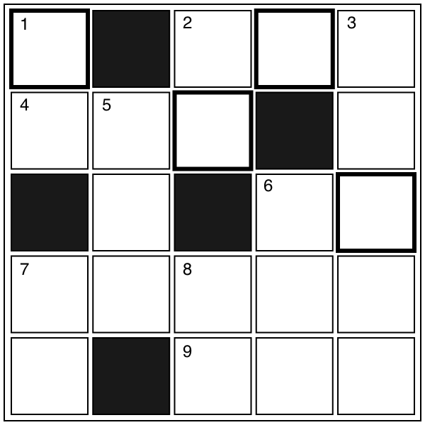

クロスワード
【→ PDF（印刷用）】

- タテのカギ
-
- １. 知り合いが多い人は「○○が広い」。
- ２. 木や紙などでできた物を入れるための入れ物。
- ３. 競技会。「音楽○○○○○」。
- ５. 食べるために畑でつくられる植物。
- ６. 隣の家との間に植木などで作る囲い。
- ７. 春に白や赤の花が咲く木。果実は酸っぱい。
- ８. 『温泉』は外来語で？
- ヨコのカギ
-
- ２. 書類に○○○をおす。
- ４. ○○○だけに顔が似ている。
- ６. 「一」は１○○、「六」は４○○。
- ７. ○○○○○の水割り。
- ９. 建築用や展示用の板のこと。
【→ 解答を見る】